Universal connector 1.0 - logstash based
Cassandra configuration check
-
On sauropod machine as a root confirm that Cassandra cluster is up.
nodetool status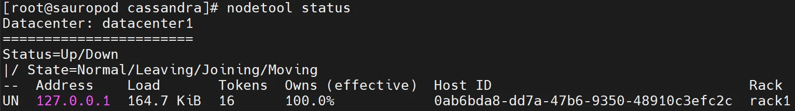
-
Confirm that
audit.logfile appeared in/var/log/cassandra/audit/.ls /var/log/cassandra/audit/audit.log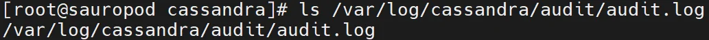
-
Login to Cassandra on sauropod and generate some events.
1 2 3 4 5 6 7 8 9 10 11 12 13
cqlsh CREATE KEYSPACE movies WITH REPLICATION = { 'class' : 'SimpleStrategy', 'replication_factor' : 1 }; use movies; CREATE TABLE movie (id UUID PRIMARY KEY, m_title text, m_release int); INSERT INTO movie (id, m_title, m_release) VALUES (uuid(), 'Alien', 1979); select * from movie; exit -
Check audit log to confirm that events are stored in.
cat /var/log/cassandra/audit/audit.log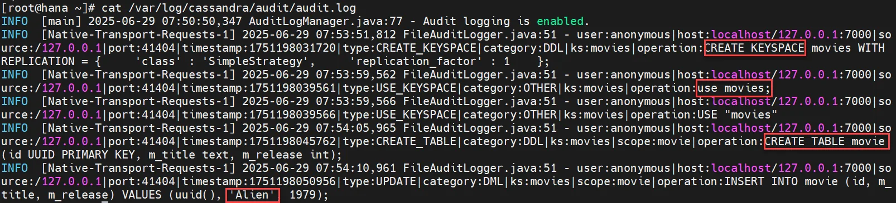
{kind=link}
{kind=link}
{kind=link}
Filebeat installation and setup
-
Check the latest version of
filebeaton Elastic web page - https://www.elastic.co/downloads/beats/filebeat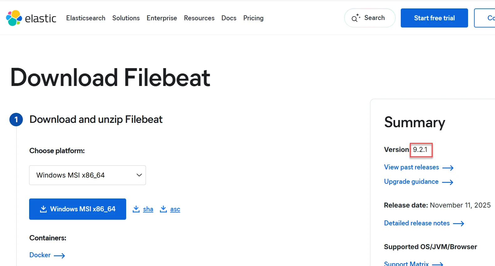
-
Download the
filebeatrpm (replace filebeat_version variable to the latest one) - on sauropod machine:1 2 3 4 5
mkdir -p /root/lab_files cd /root/lab_files curl -L -O https://artifacts.elastic.co/downloads/beats/filebeat/filebeat-<filebeat_version>-x86_64.rpm -
Install
filebeat.dnf -y install /root/lab_files/filebeat-<filebeat_version>-x86_64.rpm -
Edit
/etc/filebeat/filebeat.yml. Modify filebeat.inputs section to form below (use spaces in the indendation, it is YAML file, format is indentation aware!):- type: filestream id: "cassandra" enabled: true paths: - /var/log/cassandra/audit/audit.log exclude_lines: ['AuditLogManager'] tags: ["cassandra"] multiline.type: pattern multiline.pattern: '^INFO' multiline.negate: true multiline.match: after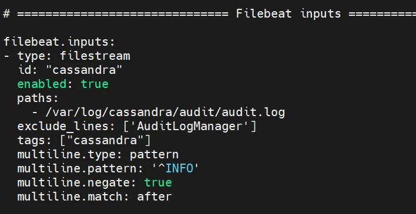
Comment or remove the entire section output.elasticsearch
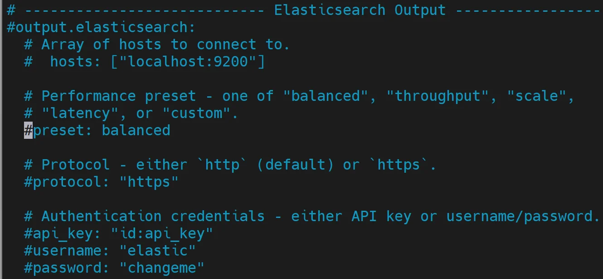
Modify output.logstash section to form below, it is important to use coll1.demo.guardium name because we will later set the encrypted connection betweenfilebeatand coll1. Do not forget to uncomment output.logstash section row as well.# ------------------------------ Logstash Output --------------------------- output.logstash: # The Logstash hosts hosts: ["coll1.gdemo.com:5047"]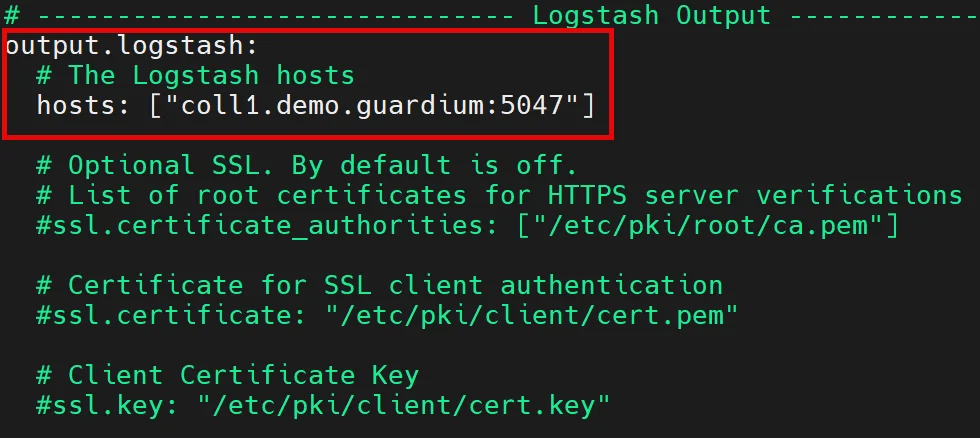
-
Start filebat on sauropod.
1 2 3 4 5
systemctl start filebeat systemctl status filebeat systemctl enable filebeat
{kind=link}
{kind=link}
{kind=link}
{kind=link}
Install and configure UC plugin
-
Starting from Guardium 12.1 the new architecture of universal connectors with Kafka Connect consumer was introduced. In this case the UC can be managed from Central Manager only. Still the legacy configuration workflow with logstash can be enabled and it will be used in this lab. To enable old configuration approach we must enable legacy workflow by executing this command on coll1 (from cli session)
grdapi modify_guard_param paramName=LEGACY_UC_CONFIG_ENABLED paramValue=1 -
Run universal connector engine on coll1.
grdapi run_universal_connector -
There is only one Cassandra filter plugin version – 1.0.1 and it is preinstalled on coll1. You can check a list of all actually available universal connector plugins on appliance by execution command below on coll1:
grdapi show_universal_connector_plugins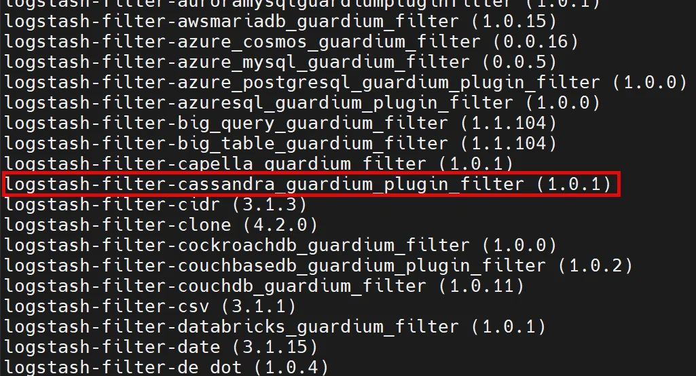
One on the list iscassandra_guardium_plugin_filter– revision 1.0.1. If new universal connector plugin version will be released and it is not preloaded on your collector you should upload it on appliance (it is not our case). -
Login to coll1 UI, confirm that there is no universal connectors configured (Configure Universal Connector view), the universal connector engine is running and add new instance using icon .
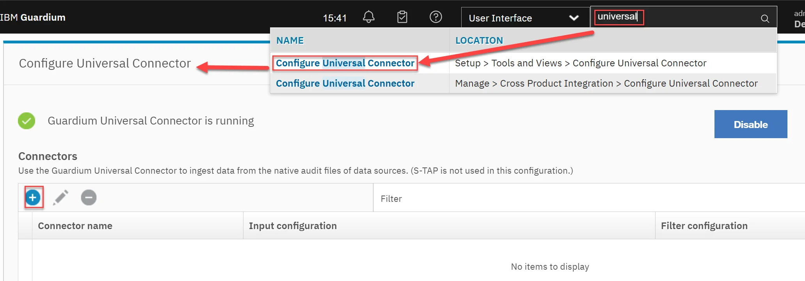
-
Configure universal connector instance for Cassandra with Connector name set to cassandra.
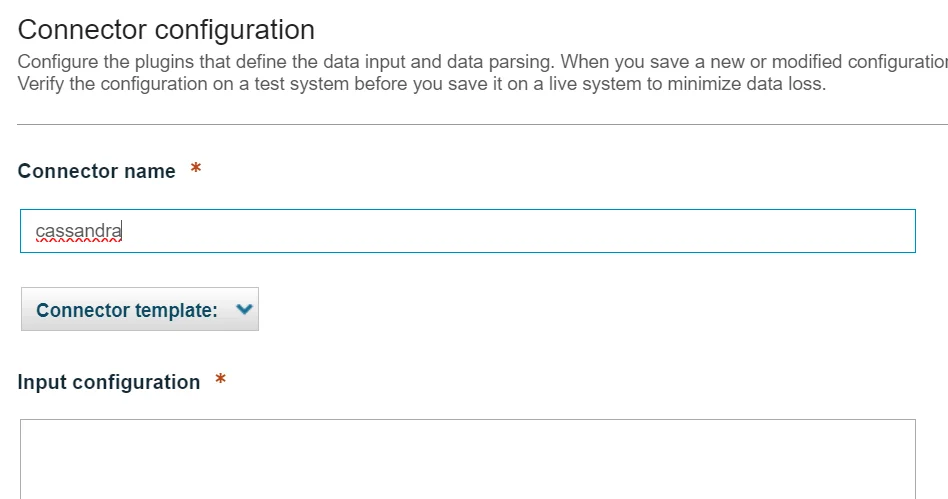
In the Input configuration section modify port used in filebeat configuration (select appropriate port). Use spaces for indentation:beats { port => "5047" type => "filebeat" }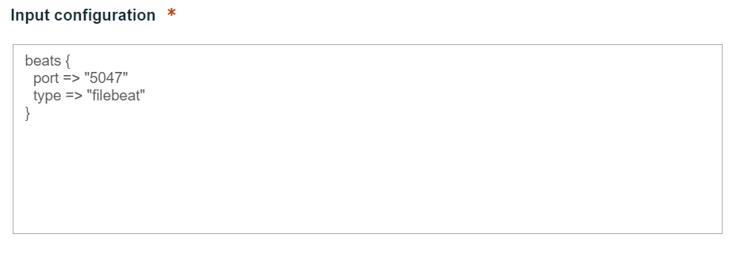
In the Filter configuration section replace content by configuration below:if [type] == "filebeat" { mutate { add_field => { "serverIP" => "%{[@metadata][ip_address]}" } add_field => { "serverHostname" => "%{[host][name]}" } } cassandra_guardium_plugin_filter{} mutate { remove_field => ["serverHostname","@version","@timestamp","type","sequence","message","host","tags","input","log","ecs","agent","serverIP"]} }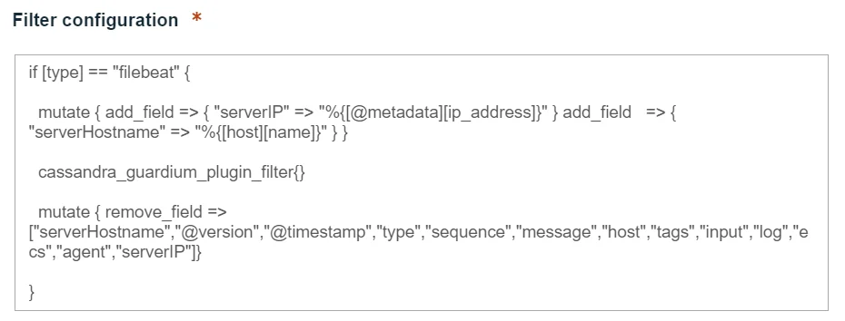
-
Save configuration and wait a while for success confirmation (takes a while).
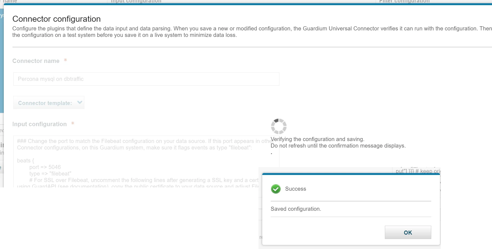
-
Confirm that new instance is displayed on the list
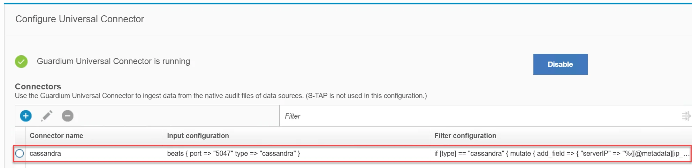
-
Open S-TAP Status view. You should see a new Cassandra universal connector instance listed. If the status will be Inactive it means that there is no currently traffic processes but our configuration but universal connector is set correctly.
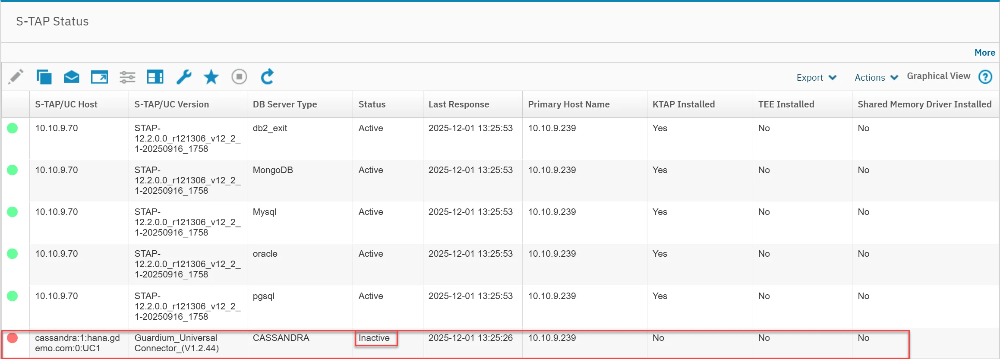
{kind=link}
{kind=link}
{kind=link}
{kind=link}
{kind=link}
{kind=link}
{kind=link}
{kind=link}
Check traffic visibility
-
Execute some activity in Cassandra instance on sauropod.
1 2 3 4 5 6 7 8 9 10 11 12 13 14 15 16 17
cqlsh use movies; INSERT INTO movie (id, m_title, m_release) VALUES (uuid(), 'Aliens', 1986); INSERT INTO movie (id, m_title, m_release) VALUES (uuid(), 'Alien 3', 1992); INSERT INTO movie (id, m_title, m_release) VALUES (uuid(), 'Alien: Resurrection', 1997); INSERT INTO movie (id, m_title, m_release) VALUES (uuid(), 'Alien: Romulus', 2024); INSERT INTO movie (id, m_title, m_release) VALUES (uuid(), 'Alien: Earth', 2025); select * from movie; exit;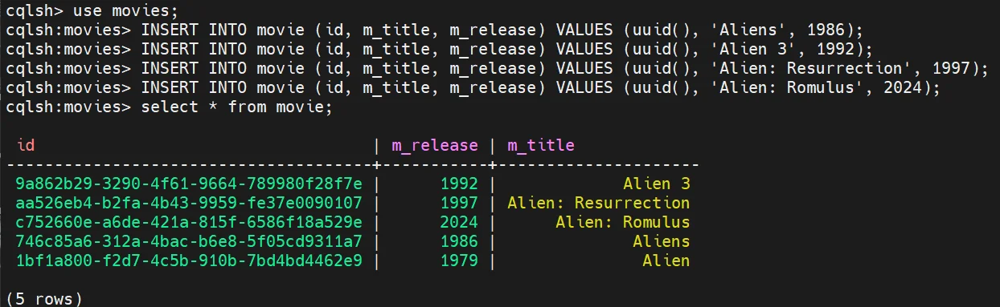
-
Check Full SQL (Training) report on coll1.
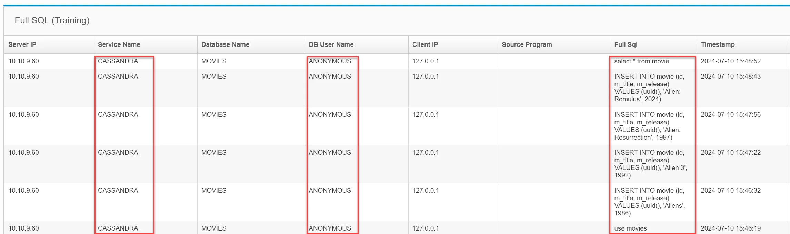
-
In the coll1 UI open S-TAP Status view. Just installed universal connector instance should be now Active.
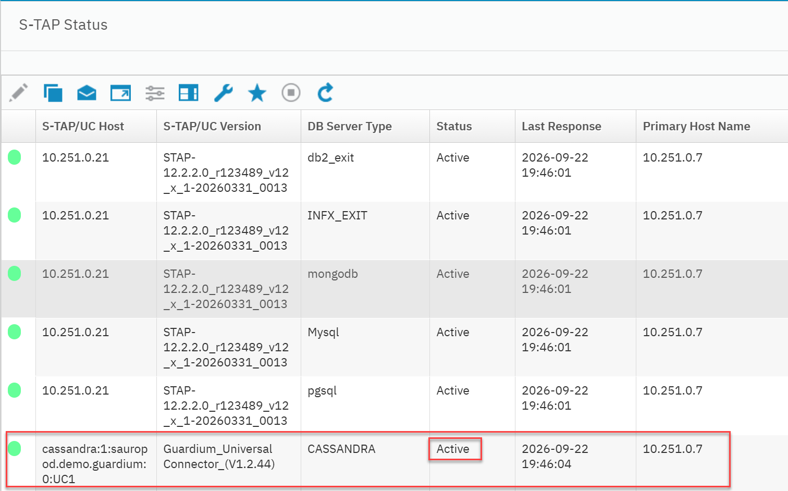
{kind=link}
{kind=link}
{kind=link}
Set TLS connection between filebeat and logstash (optional)
-
On coll1 regenerate self-signed certificate for universal connector and copy public certificate to buffer (domain is demo.guardium)
grdapi generate_ssl_key_universal_connector overwrite=1 hostname=*.demo.guardium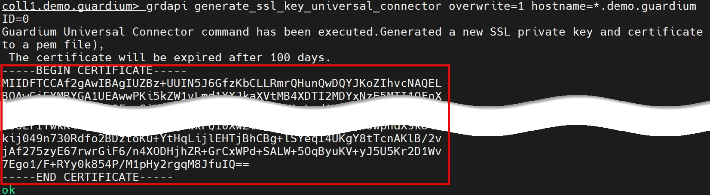
-
Save just created above certificate into the file
/etc/filebeat/guardium.pemon sauropod machine.
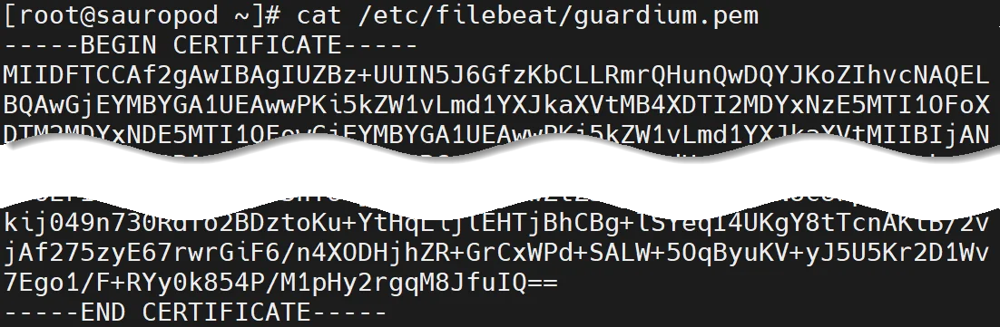
-
Check logstash TLS support on the coll1 by checking the server port and notice that TLS is not available.
openssl s_client -connect coll1.demo.guardium:5047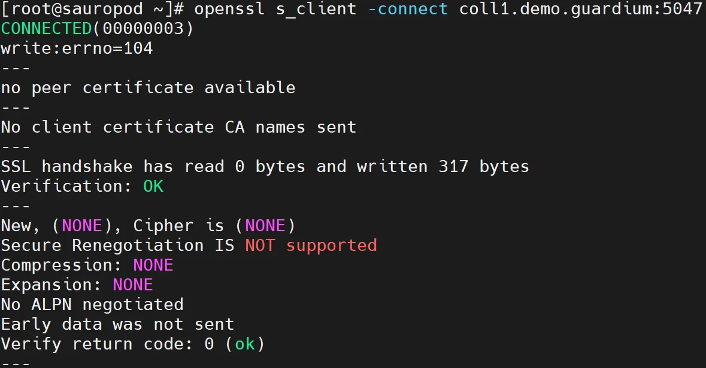
-
Login to coll1 UI and edit universal connector instance definition (Configure Universal Connector view). Add some lines related to use encrypted communication between filebeat and logstash in the Input configuration section (remember about correct indentation):
ssl => true ssl_certificate => "${SSL_DIR}/cert.pem" ssl_key => "${SSL_DIR}/key.pem"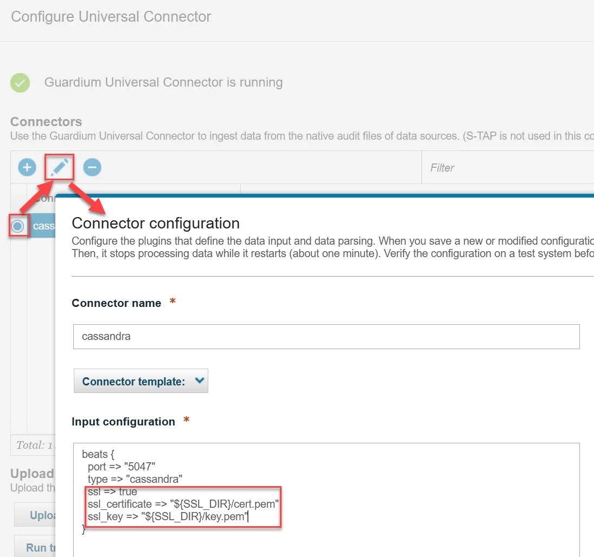
-
Check TLS logstash readiness on coll1 from sauropod machine
openssl s_client -connect coll1.demo.guardium:5047 < /dev/null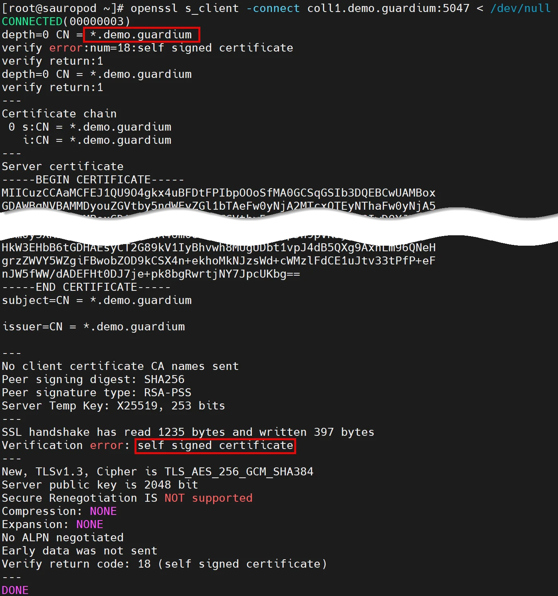
-
Modify output.logstash section in
/etc/filebeat/filebeat.ymlstore on sauropod machine by enabling ssl.certificate_authorities parameter with path to file created in point 2 (/etc/filebeat/guardium.pem)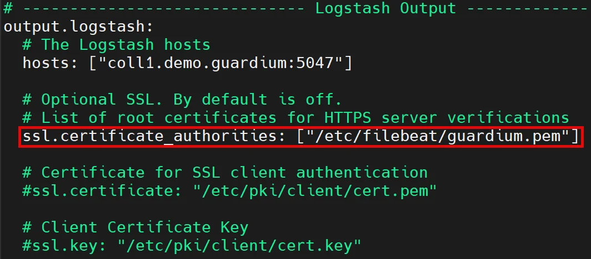
-
Restart filebeat service on sauropod machine
1 2 3
systemctl restart filebeat systemctl status filebeat -
Execute again some SQL’s
1 2 3 4 5 6 7 8 9
cqlsh use movies; SELECT * FROM movie; select * from movie where m_release > 2000 ALLOW FILTERING; exit;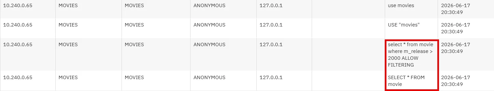
{kind=link}
{kind=link}
{kind=link}
{kind=link}
{kind=link}
{kind=link}
{kind=link}
Appendix
Dependencies:
If your goal is not related to practicing universal connectors based on logstash, you may skip this lab, with the understanding that some of the other labs may refer to a non existent instance of the Cassandra universal connector in your environment. I suggest do not deploy logstash and later kafka based traffic to coll1, so do not join these two labs one after another.
Resources:
- Universal Connector documentation https://www.ibm.com/docs/en/guardium/12.x?topic=guardium-universal-connector
- Filebeat logstash output documentation https://www.elastic.co/guide/en/beats/filebeat/current/logstash-output.html
- Available UC plugins https://github.com/IBM/universal-connectors/blob/main/docs/available_plugins.md
- Cassandra audit logging configuration https://cassandra.apache.org/doc/stable/cassandra/operating/audit_logging.html#view-the-contents-of-auditlog-files
Instructor notes: